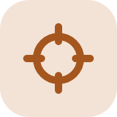

מדע וטכנולוגיה · כיתה ו׳
מסע החשמל
אי שלם נשאר בחושך. אתם המהנדסים שיחזירו לו את האור.
לחצתם על המתג והאור נדלק. אבל מאיפה הגיע החשמל?
באי האלמוג אף אחד לא שאל את השאלה הזו, עד שהאור כבה. סערה השביתה את המחולל היחיד של האי. עכשיו התושבים צריכים מערכת חשמל חדשה, והם פנו אליכם.
במסע תעברו בחמש תחנות. בכל תחנה תגלו דרך אחרת לייצר חשמל. בסוף תתכננו לאי מערכת שלמה.
מפת המסע
חמש תחנות ואתגר אחד בסוף
איך לומדים כאן
בכל תחנה ארבעה שלבים
-
מגלים
קוראים, צופים ומנבאים מה יקרה.
-

מנסים
בודקים בהדמיה מה משנה את התוצאה.
-
חוקרים בידיים
עושים ניסוי אמיתי בשולחן הניסויים.
-

מדווחים למועצה
עונים על נקודת הביקורת ב-Classroom.
קצב אישי: כל אחד מתקדם בקצב שלו. חלקים שמסומנים "אם יש זמן" הם למי שסיים את השאר. תקועים? נסו קודם את כפתור הרמז, ואז הפכו את כרטיס הרמזור.
לוח השבועות
| שבוע | תחנות בשעות המחשבים | נקודת ביקורת |
|---|---|---|
| 1 | נקודת זינוק והמחולל | המחולל |
| 2 | טורבינת רוח | טורבינת רוח |
| 3 | תחנה הידרואלקטרית | תחנה הידרואלקטרית |
| 4 | תחנה קיטורית והשוואה | קיטור והשוואה |
| בסיום | אתגר אי האנרגיה: עבודה בבית הספר והשלמה בבית | הגשת התוכנית |